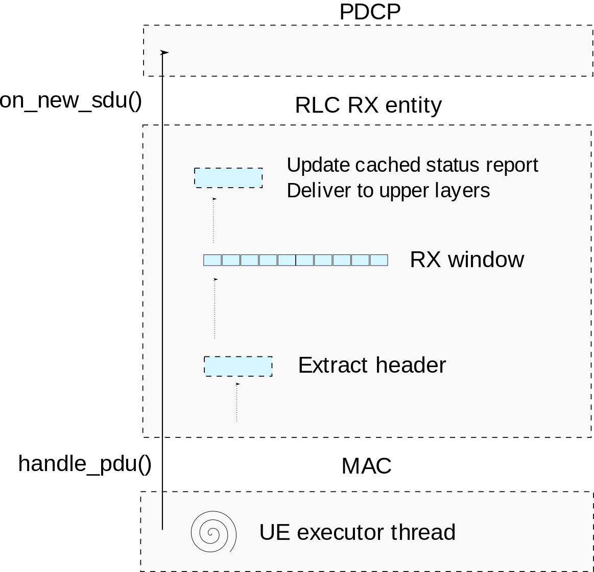
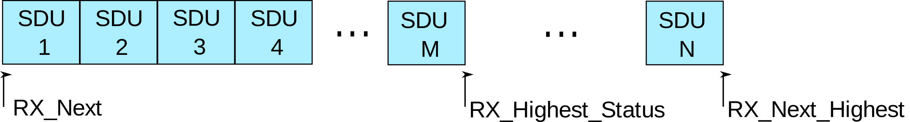
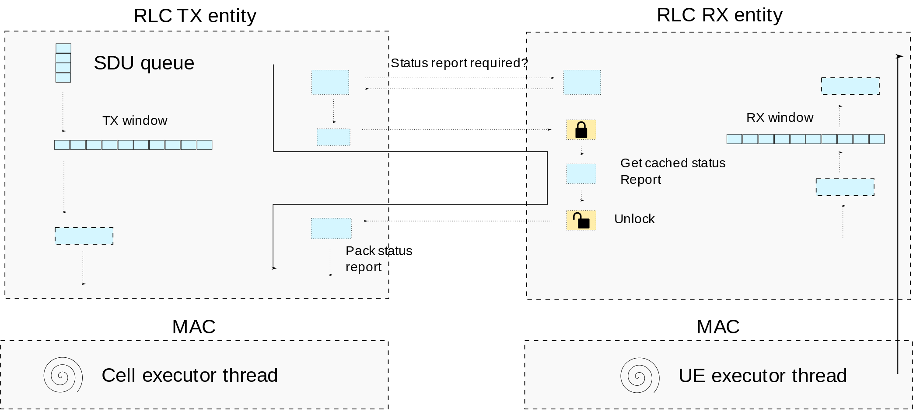

RLC 确认模式 (AM)
RLC AM 提供分段/串联和 ARQ 的数据传输服务。 它通过保留两个窗口来实现这一点，一个用于 TX，另一个用于 RX，其中存储有关发送/接收的 SDU 的信息。与 LTE 不同，每个窗口条目将包含有关单个 SDU 及其关联序列号 (SN) 的信息。
根据下层 (MAC) 指示的每个传输机会中提供的空间，RLC 可以将 SDU 分割成更小的 SDU 段。 RX实体负责将接收到的SDU段存储在RX窗口中，并在完全接收时将组装好的SDU传递给上层。
为了提供 ARQ 服务，RX 实体将生成 状态报告 带有已接收到哪些SDU/SDU段的信息。这将被传输到对等 RLC 实体，该实体将使用 NACK 信息来触发重新传输。 Tx 实体将在其 TX 窗口上保留有关已发送 SDU 的信息，以便它可以重新发送其对等方请求的 SDU。当 SDU 已被顺序确认时，该信息被释放。
数据传输
在图6，我们可以看到 RLC AM Tx 实体的简化说明。 在那里，我们可以看到两个线程执行将 SDU 推入 RLC 以及从 RLC 拉出 PDU 的工作。

图6 Tx实体数据路径
线程来自 UE执行器 会将 SDU 从 F1/PDCP 推送到线程安全队列中。线程来自 单元执行器 将调用 拉_pdu() 方法 从 RLC 拉出 PDU。 MAC 将告知 RLC 它可以填充的授权大小，并且 RLC 的 TX 实体将用新的 PDU、重传或状态报告填充有效负载。的 拉_pdu() 可以在单个槽中多次调用。
当拉出 PDU 时，RLC 实体将按优先级顺序生成状态报告、RETX、SDU 段或新 PDU。当生成新的 PDU 时，RLC 将在 TX 窗口中保留有关 RLC SDU 的信息，最显着的是 SDU 字节的副本，以及下一个分段偏移 (SO)，即分段情况下的进度。
这将被保留，直到发送的 PDU 按顺序被确认为止。这在图7。 在那里，我们可以看到 TX 窗口将维护两个状态变量： Tx_Next_Ack 和 Tx_下一个. Tx_Next_Ack 指 TX 窗口的底部，即已顺序确认的最后一个 PDU 旁边的 SN。 Tx_下一个 是将分配给下一个 PDU 的 SN。

图7 发送窗口
稍后我们将详细介绍 RETX 和状态报告的生成，但首先重要的是详细介绍 RLC 数据 PDU 的接收。
数据接收
我们可以在图中看到 图8 RLC AM Rx 实体的简化图示。在那里我们可以看到只有一个线程会将 PDU 推送到 RLC Rx 实体中，即 UE执行器 线程。当接收到 PDU 时，实体首先要做的就是检查这是数据 PDU 还是控制 PDU（即状态报告）。
{kind=link}

图8 Rx实体数据路径
如果它是数据 PDU，则将使用接收到的 SN 将 SDU 或 SDU 段添加/附加到 RX 窗口。如果SDU已被完全接收，则SDU将被传递到上层。当所有 SDU 均已按顺序接收后，RX 窗口将释放 SDU 信息。
这在 图9，我们可以看到四个状态变量： RX_下一个, RX_Highest_Status, RX_Next_Status_Trigger 和 RX_下一个_最高。 那里 RX_下一个RX 窗口的下边缘将包含尚未完全接收的第一个 PDU。 RX_Next_Higest，Rx 窗口的较高边缘，是接收到的最高 PDU。 RX 窗口也将保留 RX_Highest_Status，这是第一个被认为丢失的 SDU 的 SN，由 t-重组 定时器。 最后， RX_Next_Status_trigger，将保留触发的SN t-重组。这是为了更新 RX_Highest_Status 到第一个已知丢失的 PDU，当 t-重组 过期并检测到新的损失。
{kind=link}

图9 接收窗口
ARQ 和状态报告
当 RLC 收到带有标头的 PDU 时 轮询位 设置，并且 t-状态-禁止 未运行时，RLC 实体必须在下一个传输机会中向其对等体传输状态报告。 TX 实体将通过检查 RX 实体中的布尔值来检查是否需要状态报告，该布尔值是在接收到轮询位时设置的。
如果需要状态报告，TX实体将从RX实体检索缓存的状态报告。该缓存状态报告在接收到每个 PDU 时更新，以避免阻塞 MAC 在接收期间生成状态报告 拉_pdu().
生成状态报告的过程的说明可以在 图10.
{kind=link}

图10 状态报告传输
当RLC收到状态报告时，必须将其传递给TX实体进行处理。 TX实体将使用接收到的状态报告来更新TX窗口和RETX队列。因为两者都 UE执行器 线程和 单元执行器 线程可以更新 TX 窗口和 RETX 队列，这两个变量都需要用锁来保护。处理状态报告的过程的说明可以在 图11.

图11 状态报告处理
MAC 缓冲区状态报告
MAC 需要知道 RLC TX 实体中缓冲区的大小才能给予适当的授权。由于当存在许多不活动的 UE 和承载时，MAC 的轮询效率较低，因此每当更新此值时，RLC 都会推送缓冲区的新状态。这可以在拉取 PDU 时、接收到 PDU 时或定时器到期（例如需要更新状态报告）时完成。
由于这可以从任何线程完成，因此保留所有队列的缓存大小和任何挂起的状态报告，因此我们可以以最小的阻塞更新缓冲区状态对 MAC。